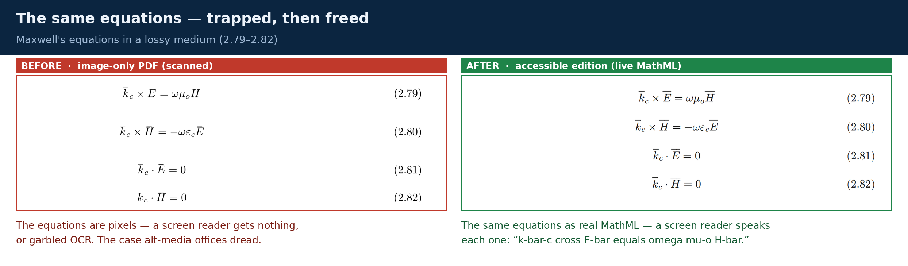

Flagship exemplar
Equation‑dense STEM, made truly accessible.
A scanned electromagnetics chapter has its mathematics trapped in images — a screen reader gets noise, not "the complex propagation constant equals omega root mu‑epsilon." Here is the same chapter as a certified accessible HTML + MathML edition: the math spoken and explorable by a screen reader — built from the image‑only PDF, and proven 100% faithful to the source.
Open the accessible edition → See the QA & provenance (signed)
What the exemplar proves
Hear the math
Audio rendering — the equations read aloud in a screen‑reader‑style voice (neural TTS), so you can hear what the accessible math sounds like. This is an illustrative narration, not a live screen‑reader capture.
How it was made
- From the image‑only PDF, not the source. The pages were rasterized to images (no text layer) and the mathematics transcribed from those images into real MathML — the same source‑less path a real scanned client text requires.
- Verified against ground truth. The image‑derived transcription was then checked against the author's original LaTeX and matched 100%, character‑for‑character.
- Documented, human‑reviewed, gated. Every step produces a checkable output; ambiguities were surfaced for the author, not silently guessed; the author signed off. It is not a black box.
- Spoken by real assistive tech. The math is real MathML rendered with MathJax and a speech engine, so NVDA + MathCAT (Windows) and VoiceOver (macOS) read and navigate every equation.
The material is the author's own work, reproduced with permission and freely shareable. This edition describes a documented, human‑reviewed conversion process and makes no compliance guarantee.